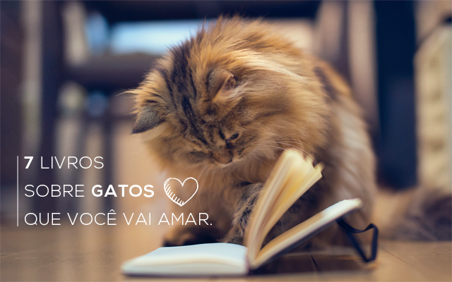
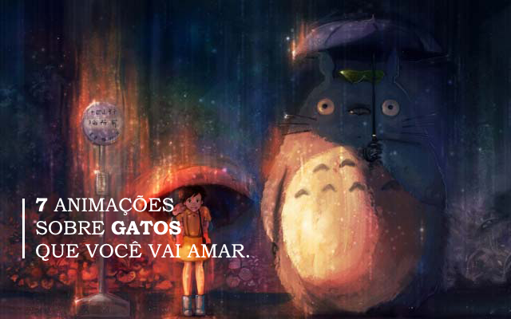
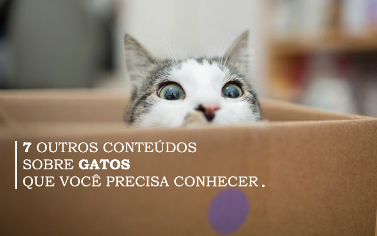
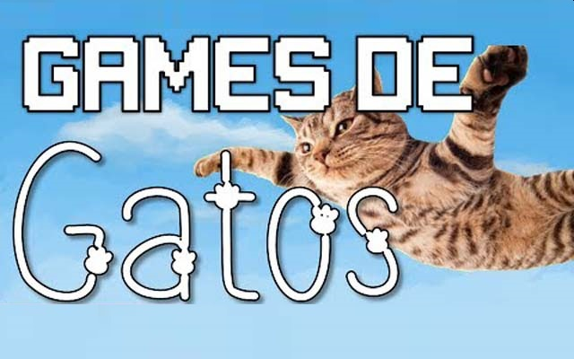
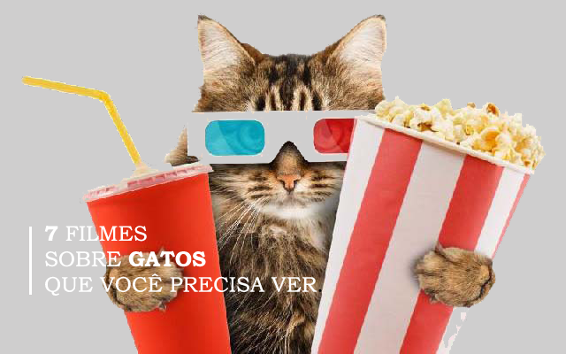

Diversas variedades incríveis

Eu sou um gato ()
Escrito por Natsume Soseki, o livro retrata a vida da intelectualidade do Japão da Era Meiji a partir da narrativa de um gato, que foi acolhido por Chinno Kushami, o professor mal-humorado e estagnado em sua completa falta de perspectiva. A narrativa do gato é repleta de sarcasmo, ridicularizando de maneira demolidora a vida da intelectualidade do Japão da Era Meiji e mostrando a fragilidade do professor e daqueles que o cercam. Sugerindo-se sempre como um ser de raça superior, o gato, com sua pesada munição e ares de dândi, não poupa nada nem ninguém. Sua linguagem é carregada de sarcasmo quando o assunto é o ser humano. Todos os personagens passam pelo crivo do felino que leva o leitor a uma jocosa aventura, chamando-o para ser seu cúmplice na tarefa de desvendar o trágico cinismo interior de cada personagem e seu mundo repleto de mesquinhez, mentiras, vaidades e desolação. Muitas vezes trazendo para o texto idéias de escritores e filósofos do passado ou contemporâneos, Soseki propõe uma reformulação do modo japonês de escrever e pensar, a partir do contato com o pensamento e os costumes do Ocidente. Essa reformulação vem ao encontro das mudanças efetuadas na Era Meiji (1868-1912), quando o Japão passou por reestruturações políticas, econômicas e sociais, tornando-se potência mundial.
Dewey, um gato entre livros ()
Escrito por Vicki Myron com a ajuda de Bret Witter, a narrativa gira em torno de um gato chamado Dewey, que foi abandonado na madrugada mais fria do ano numa caixa de devolução de livros na biblioteca pública de Spencer. O gato acaba sendo adotado pela bibliotecária e, a partir daí, passa a ser o “mascote” da biblioteca. A narração dos momentos ao longo da vida de Dewey são extremamente fofos, engraçados e faz você se ver apegada ao bichano. Além disso, o livro é baseado numa história real.
Casper, o gato viajante ()
Escrito por Susan Finder, o livro é baseado numa história real. A narrativa gira em torno de Casper, um gato que tornou-se uma celebridade nacional quando os jornais divulgaram a história de um gato extraordinário que apanhava regularmente o autocarro número 3, fazendo viagens de dezoito quilómetros pela sua cidade, Plymouth, em Devon. Enquanto a sua dedicada dona, Susan Finden, se interrogava por onde é que andaria o seu elusivo gato, Casper ia alegrando a vida de inúmeros passageiros que andavam de um lado para o outro nos seus afazeres. Também os motoristas dos autocarros começavam a estar familiarizados com Casper e a notícia percorria a central de transportes, alertando a equipa de que um passageiro muito especial poderia estar a bordo dos seus veículos. Com efeito, tornou-se a mascote da empresa de transportes, e fotos de Casper e de Susan decoravam a carreira número 3. Quando Casper foi, de forma lamentável, morto por um carro no início de 2010, mensagens de solidariedade afluíram de todo o mundo. Tornou-se imediatamente claro que Casper e a sua notável história haviam tocado a vida de muita gente.
Um náufrago que ri ()
Escrito por Rogerio Menezes, o livro conta sobre a decadência financeira e existencial de um homem do ponto de vista de seu gato. Um felino completamente crítico, mestre em comentários ácidos e duras avaliações. Pelos olhos verdes-esmeralda do carismático gato Ravic, que, entre umas dormidas e outras, passa a vida observando tudo o que acontece à sua volta, Rogério Menezes elabora um sarcástico e entusiástico retrato da frágil condição humana. Nada que é humano escapa da língua ferina de Ravic. Principalmente Antônio Martiniano (ou, na escrita Raviquiana, A.M), o criador dessa criatura sobre-humana, que tem quatro patas e se diz estoica. Um gato que nunca comeu passarinhos, mas cita Henry James e se curva a Philip Roth. Ravic é a redenção do dono, um jornalista desempregado em crise de meia-idade, um escritor que nunca conseguiu desabrochar. Um incansável decifrador de espaços, sentimentos e subjetividades como o gato Ravic o é. Enquanto Antonio Martiniano se dilacera em dores profundas, em trágica dissonância, em colisão frontal, com os horrendos tempos em que vivemos, seu gato de estimação dá de ombros e se diz a todo instante: ok, esse é o pior dos mundos, ora bolas, mas é o que temos. O romance mescla a dramaticidade presente em escritores como Graciliano Ramos, Dostoiévski, Turguêniev, Balzac e Henry James (dos quais o autor é contrito e devoto leitor) e a fantasia desvairada dos desenhos animados de Walt Disney (dos quais Rogério foi voraz consumidor nos tempos de criança). Em 'Um náufrago que ri', Rogério Menezes navega, sem naufragar, entre a realidade e a fantasia, entre a memória e a invenção.
100 gatos que mudaram a civilização: Os gatos mais influentes da história ()
Escrito por Sam Stall, "100 Gatos que Mudaram a Civilização" homenageia suas extraordinárias contribuições à ciência, à história, às artes, à política, à religião e muito mais. Você conhecerá um gato que entrou com um processo e gatos que inspiraram grandes trabalhos de literatura e música clássica. Você até irá conhecer um gato que telefonou para a polícia para salvar a vida do seu dono. Essas histórias verdadeiras, lindamente contadas, são um tributo à inteligência, à bravura e à natureza amorosa dos gatos do mundo todo.
Um gato de rua chamado Bob ()
Escrito por James Bowen, o livro é narrado pelo dono do Bob, um morador de rua em Londres chamado James Bowen. James tentava sair de uma situação de dependência de drogas e tocava nas ruas para conseguir dinheiro. Um dia Bowen encontrou um gato laranja, com a patinha machucada, muito magro, como quem estivera passando fome. Bowen o nomeou Bob e resolveu cuidar dele como podia, o alimentando e dando carinho. A princípio, Bowen iria cuidar do gato até ele melhorar e voltar para quem quer que fosse o seu dono, mas o gato resolveu ficar. Bob continua ao lado de Bowen, em todos os momentos de dificuldade e perigo que a vida nas ruas impõe, e não o larga. Bowen diz que Bob parece entendê-lo e o ajuda a viver o presente, desligando-se do passado. 'Um gato de rua chamado Bob' possui mais dois livros em sequência, então é uma indicação para os amantes de gatos.
Gata do Dalai Lama ()
Escrito por David Michie. Após adotar uma gata no mesmo período em que aprendia ensinamentos do budismo, o autor Michie despertou para a vontade de escrever um livro que oferecesse o conhecimento desta cultura milenar de uma forma simples, reflexiva, mas com bom humor, que não passasse perto de diversos outros títulos que tratam da busca pelo autoconhecimento e a felicidade através de intermináveis clichês. Por isso, teve a feliz ideia de inserir sua mais nova companheira – a gata – como protagonista da história e fazer dela uma personagem bastante especial, que passa os ensinamentos budistas através de histórias bonitas e interessantes. Salva da morte pelo líder espiritual Dalai Lama, ela passa a usufruir da intimidade de Sua Santidade, de seus ensinamentos e sabedoria. A proximidade com ele lhe rende também notabilidade social na história, status que atrai curiosidade dos personagens do livro e abre portas em ambientes diversos. A obra mostra que a vida é uma mistura de ações, reações, compaixão e recomeços para todos os seres. Além disso, traduz a felicidade como algo que não depende do que se tem ou conquista e, sim, dos sentimentos mais íntimos de cada um e de que forma as pessoas lidam com os desafios e problemas impostos pela vida.

Tom and Jerry ()
O centro da trama se baseia geralmente em tentativas frustradas de Tom de capturar Jerry, e o caos e a destruição que se segue. Tom raramente consegue capturar Jerry, principalmente por causa das habilidades do engenhoso ratinho, e também por causa de sua própria estupidez. As perseguições eram eletrizantes e sempre vinham acompanhadas por boa trilha sonora. Também eram utilizadas diversas armadilhas e truques que no final não davam resultado satisfatório, como bombas e ratoeiras, coisas que eram fundamentais na rivalidade entre o gato e o rato. Alguns personagens também marcam presença na trama, como o bulldog Spike e o rival de Tom, o gato Butch.
Garfield ()
Ele talvez seja o gato mais famoso da história e é conhecido por amar lasanha e (assim como nós) odiar segundas-feiras. Laranja, gordinho e peludo, ficou famoso com as histórias em quadrinhos, publicadas em jornais e revistas. Nosso amor por ele foi tão grande que decidiram usar a computação gráfica para levar o gato ao cinema. O filme não é muito bom, mas rendeu uma continuação anos depois. Ainda assim, ele continua morando no nosso coração com seu jeitinho mal humorado.
Alice no País das Maravilhas ()
Apesar de não ser o protagonista, o Gato de Cheshire (mais conhecido como Gato Risonho), rouba a cena por muitas vezes, ajudando Alice a tentar entender as regras do País das Maravilhas. Ok, ele é um pouco louco – assim como todos os outros personagens –, mas tem muito carisma, certo?
Thundercats ()
As aventuras de um grupo de alienígenas humanóides felinos do planeta Thundera. Quando o planeta moribundo encontra seu fim, o grupo, conhecido como os ThunderCats, é forçado a fugir da sua terra natal.
Meu amigo Totoro ()
Mei, é uma jovem que encontra uma pequena passagem em seu quintal, que a leva à um lendário espírito da floresta, conhecido como Totoro. Sua mãe está no hospital, e seu pai, divide o tempo entre dar aulas na faculdade e cuidar de sua mulher doente. Quando Mei, tenta visitar a mãe por conta própria, se perde na floresta, e só o grande e fofo Totoro, pode ajudar a menina a achar o caminho de volta para casa.
Sussuro do coração (Whisper of the heart / Mimi wo Sumaseba) ()
Shizuku Tsukishima é uma garota de 14 anos de espírito livre e alegre que atualmente está aproveitando as férias de verão. Ela adora passar seu tempo livre na biblioteca local, onde nota que os livros que lê são frequentemente conferidos por um garoto chamado Seiji Amasawa. Um dia, enquanto andava de trem, Shizuku percebe um gato estranho sentado perto dela. Por que um gato comum pegaria um trem? A curiosidade pode ter matado o gato, mas também pode prejudicar seriamente uma menina. Shizuku decide seguir o gato misterioso para ver para onde ele vai, e logo se depara com uma loja de antiguidades administrada por um fabricante de violinos chamado Nishi, o avô do garoto misterioso que compartilha seu gosto pela literatura. Seiji e Shizuku logo se tornam amigos e, enquanto Seiji tem certeza de seus sonhos e como segui-los, Shizuku ainda não tem certeza de seus próprios talentos. No entanto, quando ela vê uma estranha estatueta de gato, "O Barão", na loja, parece que essa estatueta sussurra algo para ela, puxando seu coração e dando-lhe a inspiração que ela tanto precisava. Uma voz empurra Shizuku mais longe do que ela jamais poderia imaginar, mudando sua vida para sempre.
O retorno do gato / O Reino dos gatos (The cat returns / Neko no Ongaeshi) ()
Spin-off de Mimi wo Sumaseba. Haru Yoshioka é sua garota comum do ensino médio que tem problemas para tomar decisões por si mesma. Um dia, ela vê um gato estranho atravessando a rua com um pequeno presente... e um caminhão indo direto para ele! Haru nem sequer para pra pensar antes de pular na frente do caminhão e colocar os dois em segurança. Esse ato altruísta inicia uma cadeia de eventos que envia Haru para uma aventura épica. O gato que ela salvou não é um felino comum e sim Lune, príncipe dos gatos. Em homenagem a sua bravura e por salvar sua vida, ele oferece se casar com ela. Haru murmura uma resposta que é considerada "sim" e, para o bem ou para o mal, seu destino está selado. Juntamente com seus companheiros felinos Muta e o Barão, ela é ajudada de cima por um corvo chamado Toto, e deve viajar para o mundo dos gatos para corrigir esse mal-entendido. Sua jornada é mais difícil do que parece: se ela não conseguir escapar das garras do rei dos gatos e encontrar seu verdadeiro eu, será transformada em um gato para sempre. Haru pode começar como uma garota todos os dias, mas depois de sua descida ao mundo dos gatos, ela retorna como um animal completamente diferente.

Jun's Kitchen ()
Canal no youtube de um homem chamado Jun, em que ele mostra várias receitas diferentes na companhia de seus dois gatos.
Kedi (documentário) ()
Para quem é fã de documentários e curte assistir histórias reais, o longa Kedi, produzido por Ceyda Torun, mostra gatos de rua circulando em Istambul. A exemplo de A Marcha dos Pinguins, a produção mostra a rotina dos animais de uma forma natural. A diferença é que o cenário é uma cidade milenar. Para quem curte história e gatinhos, o longa é a pedida perfeita.
Cats (musical) ()
Cats é um musical composto por Andrew Lloyd Webber que teve sua estréia em Londres em 1981, mas que se consagrou por dezoito anos em cartaz na Broadway. Para realizar esse espetáculo, Loyd musicou uma série de poemas de T. S. Eliot sobre gatos, onde Memory foi a música de maior sucesso.
Cats é o quarto show de maior duração na história da Broadway e West End,e era o mais antigo espetáculo da Broadway entre 1997-2006, superado pelo O Fantasma da Ópera, também de Lloyd Webber. Foi realizado em todo o mundo muitas vezes e foi traduzido para mais de 20 idiomas.
Imaginary cat (série/dorama coreano) ()
Hyun Jong Hyun (Yoo Seung Ho) é um desenhista de webtoon e trabalha meio período em uma biblioteca. Ele sempre sonhou em ser um artista famoso de webtoons. Ele também tem uma gata chamada Boggil, ele a adotou porque ela foi abandonada. Desde então, eles vivem juntos e ele só tem olhos para sua gatinha.
Kuli, gatinho surfista havaiano de um olho só ()
Se você sempre acreditou na história de que gatos têm pavor de água, pode se surpreender com a história de Kuli, um felino que, além de adorar o mar e surfar, ainda consegue superar a dificuldade de ter um olho só e se tornar um "esportista" famosos que virou febre na internet.
Músicas com temáticas de gatinhos ()
“Existem duas maneiras de nos refugiarmos das misérias da vida: música e gatos”, disse um dia Albert Schweizer.
E pra quem ama música, sabe que ela tem um poder parecido com o dos gatos: nos acalmar, melhorar nosso astral e nos deixar mais felizes. Que os gatos são seres inspiradores você já sabe, mas já parou pra pensar em quantas músicas eles já inspiraram? Confira algumas dessas no link.
Lil Bub ()
Um defeito genético faz que Lil Bub quase sempre tenha a língua para fora, devido à forma estranha de sua mandíbula. Essa peculiaridade transformou esta gata numa estrela do Instagram, onde tem 1,9 milhão de seguidores. Graças a este sucesso, o seu dono pode ajudar outros gatos que têm a mesma doença dela.

Neko Atsume ()
Criado em 2014, neko atsume é um jogo sobre gatos que cujo objetivo é colecioná-los! este jogo não requer tanta jogatina assim, sendo mais recomendado para quem é realmente amante de gatos e quer ver seus diferentes tipos.
The Battle Cats ()
Um grande jogo de estratégia em que os gatos são as principais armas. No game é necessário conquistar vários países do mundo usando diversos tipos de gatos para derrotar a torre inimiga. Gratuito.
Pop Cat ()
Puzzle clássico de eliminação com gatos!
O Pop Cat é um puzzle de eliminação com carinhas de gatos no lugar de peças. O funcionamento é simples, toque para selecionar blocos com carinhas da mesma cor, toque novamente para que elas explodam. Quanto mais caras explodirem de cada vez, mais pontos. Gratuito.
Fly Cat ()
Um gato com uma espécie de jetpack precisa desviar de móveis em uma sala. A ideia do jogo é muito parecida com a do Jetpack Joyride, mas aqui o desafio é bem maior: controlar o voo do gato exige habilidade manual apurada. Vem com três níveis de dificuldade: Normal, Difícil e Insano.
Cats Revenge ()
IDLE RPG DE GATOS. Colete GATOS HERÓICOS e batalhe contra a TERRÍVEL PUGOMANCER!! Castle Cats tem uma história especial e única na qual você pode acompanhar os gatos e derrotar a TERRÍVEL PUGOMANCER. Gratuito.
Castle cats ()
Puzzle clássico de eliminação com gatos!
O Pop Cat é um puzzle de eliminação com carinhas de gatos no lugar de peças. O funcionamento é simples, toque para selecionar blocos com carinhas da mesma cor, toque novamente para que elas explodam. Quanto mais caras explodirem de cada vez, mais pontos. Gratuito.
Cat'n'Robot: Defesa Passiva ()
O teu reino está a ser invadido por monstros. Fortalece os teus gatos guerreiros, constrói um robô maior para derrotar os inimigos. Simples e divertido de jogar, ficarás viciado nestas batalhas épicas. Gratuito.

Gato de Botas ()
Famoso nos filmes do Shrek, este simpático gatinho tem o dom de arregalar os olhos e fazer cara de coitado sempre que quer muito algo. Tanto que eu sempre falo dele. Vira e mexe digo “fulano estava fazendo a cara do gato de botas”. Fofo ao extremo, foi inspirado no conto clássico de mesmo nome, que fala sobre um gato esperto e nobre, e é retratado como se fosse um soldado valente mesmo, com direito até a sotaque espanhol. O sucesso do personagem foi tão grande que rendeu um filme próprio, que é legalzinho. Agora vamos à pergunta do dia: quem não tem vontade de levar o gato de botas para casa?
A Incrível Jornada ()
A versão original foi lançada em 1963. A história gira em torno de três animais (dois cachorros e uma gata), que ficam sob os cuidados do vizinho enquanto os donos viajam de férias. Sem entender o que está acontecendo, eles decidem partir por uma longa viagem na tentativa de encontrar os donos.
Um gato em Paris ()
Para quem curte animação, Dino é um gato que divide sua vida entre duas casas. Durante o dia, ele vive com Zoé, a filha de Jeanne, uma delegada de polícia. Durante à noite, ele escala os tetos de Paris em companhia de Nico, um ladrão de grande habilidade. Jeanne está investigando vários roubos de joias e ainda precisa cuidar da vigilância do Colosso de Nairóbi um grande monumento cobiçado pelo bandido Costa. Dino é testemunha de tudo que acontece e viverá muitas aventuras.
Minoes, a mulher gato (2001) ()
Minoe é uma jovem dotada de características felinas e seu superpoder peculiar acaba ajudando um repórter a vencer a timidez para desvendar um mistério. Juntos, eles descobrem os mais insólitos segredos de uma cidade onde, aparentemente, nada acontece. O filme mistura cenário lúdico, com a atmosfera europeia (a direção é do holandês Vincent Bal).
Virei um gato ()
Tom Brand (Kevin Spacey) é um poderoso e arrogante empresário, que está obcecado com a ideia de construir o maior arranha-céu da América do Norte. O problema é que seu atual empreendimento, em construção em Nova York, sofre a concorrência de um prédio sediado em Chicago, que pode receber uma antena no teto apenas para superar a disputa. Paralelamente, Tom precisa comprar um presente para sua filha, Rebeca (Malina Weissman), já que o aniversário dela se aproxima. A garota há anos lhe pede um gato, mas Tom se recusa a comprá-lo porque odeia o animal. Sem encontrar outra alternativa, ele acaba indo na estranha loja de Felix Perkins (Christopher Walkins), um encantador de gatos que lhe vende o Sr. Bola de Pêlos. Entretanto, uma disputa dentro de sua própria empresa faz com que Tom sofra um acidente e, repentinamente, tenha sua consciência transferida para o gato recém-comprado.
A Mansão Mágica ()
Thunder, um simpático gatinho abandonado, procura refúgio contra uma tempestade que está se aproximando. Nessa busca, ele acaba indo parar em uma casa muito esquisita, habitada por um velho mágico chamado Leonardo, que tem vários outros animais e brinquedos que ganham vida. No entanto, quando Leonardo fica doente, seu sobrinho começa a fazer planos de vender a casa. Agora, cabe a Thunder fazer o possível para defender seu novo lar.
Como cães e gatos ()
O filme descobre a verdade sobre a guerra de alta tecnologia que está sendo travada e que os seres humanos nem sequer estão a par: a eterna luta entre cães e gatos. A história fala sobre o plano dos gatos para destruir uma nova vacina que, se desenvolvida, irá destruir as alergias que os humanos têm a cachorros, e sobre os esforços dos cães para impedir que os gatos executem esse plano.